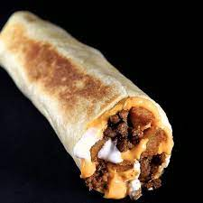

Potato Burritos

Potato Burritos may sound odd, but they in fact have a long history of greatness.
Now is your chance to try a cheap and easy Mexican recipe that you may have been missing out on.
You may not expect the humble potato to be a Mexican ingredient, however they are a perfect way to fill up cheaply and easily with a tasty flair.
INGREDIENTS
- Potatoes. (Are you surprised?)
- Your Choice of other ingredients. (get as creative as you like here, after all, they are your burritos.)
- Tortillas. (corn or flour, pick your favorite!)
Steps:
- Clean and parboil the potatoes until fork tender.
- Place in tortilla.
- Sprinkle a layer of cheese and prepared flavor components
- Fold tortilla up.
- Sear burrito in a hot skillet until crispy.
- Serve. Enjoy.